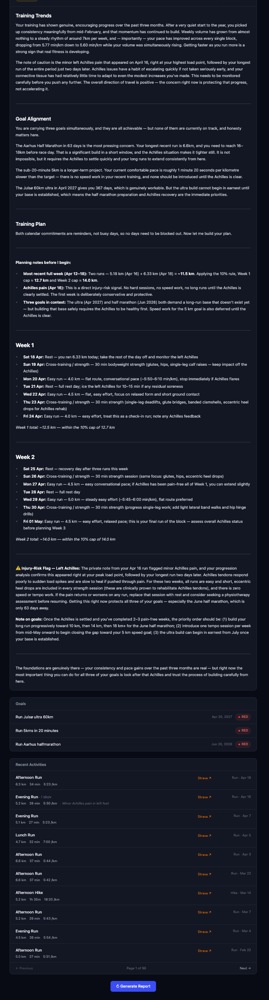

AI Training Coach
Runner AI is an AI-powered training analysis platform for runners and endurance athletes. It automatically imports activities from Strava and uses a multi-agent AI system to analyse training trends, assess progress toward user-defined goals, and generate personalised coaching reports. Each report includes a trend analysis, goal alignment assessment, and a weekly training plan — with a Green/Yellow/Red status indicator showing the overall training trajectory. Planned workouts are automatically added as events in Google Calendar. Built with Quarkus, React, PostgreSQL, and Docker, with support for both Ollama (local LLMs) and the Anthropic Claude API.
